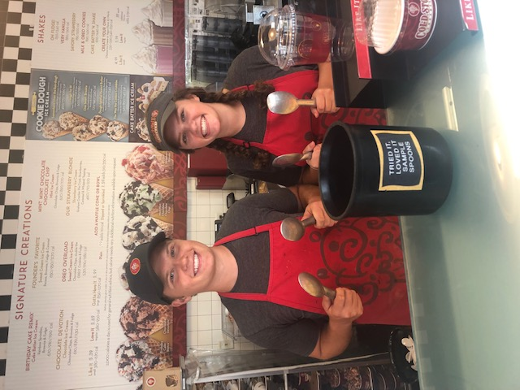

My Family
One of the first things that people know about me is that I have a twin brother. Whenever I am introducing myself to a new group of people, especially new classes, that is always the "fun fact" that I use as an ice breaker. Mat and I both attend the University of Minnesota, and both mistakenly began our college careers in the College of Biological Sciences! Now, he is in the Carlson School and I am in CLA. I love having him so close to me since we get along well and lean on each other often for support.
Below is a picture of us in high school both working at Cold Stone Creamery. He didn't actually work there, but my boss let him work one shift with me just for fun!
My mom recently got a job as a receptionist working for Abbott Laboratories, and my dad is a software developer/ data analyst currently working as a consultant for Digi-Key electronics/eXcellentia. He's definitely a good resource to help me develop my digital literacy skills.